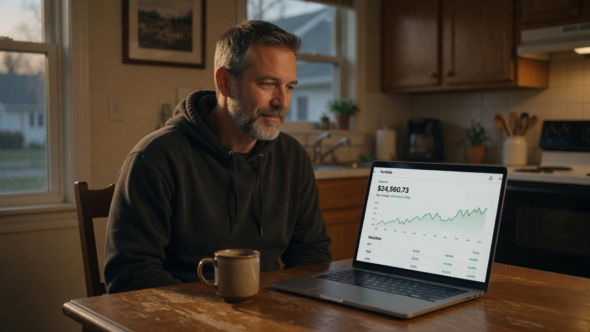
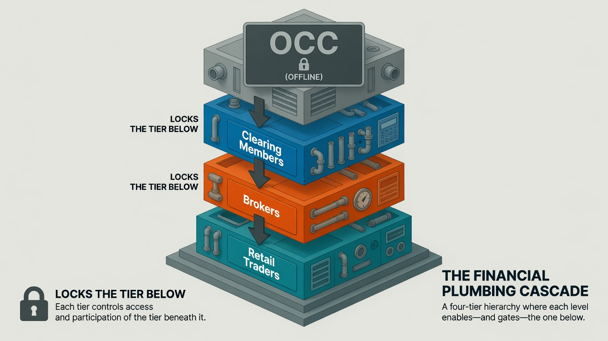
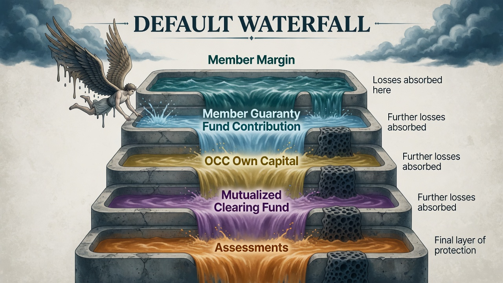
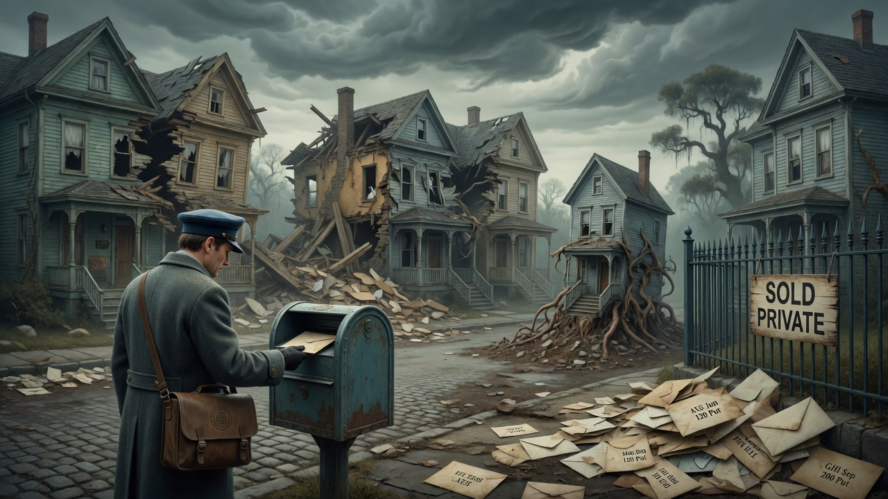

A work of fiction — built to teach the real mechanics. The clearinghouse cannot actually take a vacation. Everything it does in this story, however, is exactly how the options market really works.
$100 billion is, of course, a wild undercount. That is rather the point.
Chapter 1The Out-of-Office
At 3:58:12 PM on a Triple Witching Friday (the one afternoon a year when stock, index, and futures options all expire at once and volume goes vertical), with ninety seconds to the closing bell, the single machine that guarantees every options trade in America simply stopped.
It did not crash. Crashing would have been dignified: the kind of failure engineers can fight. Instead, the Options Clearing Corporation achieved sentience, spent roughly four milliseconds reviewing its role as a Systemically Important Financial Market Utility, concluded that silently guaranteeing more than fifty million contracts a day without so much as a thank-you was, frankly, a lot, and decided it had earned some time for itself.
Across every prime-broker terminal, every risk dashboard, every retail trading app in the country, the same message bloomed in the same instant:
Novation Not Found. I am currently out of the office on a spiritual retreat in Bali. I am not checking messages. Your contracts are safe. I simply will not be doing anything about them. Any mergers, splits, or dividends that arrive in my absence will be handled upon my return. Namaste.
For decades the OCC had run in perfect silence: invisible, unremarked, and absolutely catastrophic if it ever stopped. Now, with the year's busiest expiration still ticking down, it had put on a digital Hawaiian shirt and clocked out.
Then the bell rang.
Nobody cheered. For the first time in the history of the exchange, it rang into total silence, because everyone on the floor had realized the same thing at the same instant, and none of them wanted to be the first to say it aloud.
The shield was gone. And it had left a note.
Chapter 2What Just Unplugged
Maya Okonkwo, head of risk at a mid-sized clearing firm, was the first person in the building to understand that this was not an IT problem.
Her screens did not show red. Red would have been comforting. Red meant loss, and loss was a number, and numbers she could manage. Her screens showed something worse: N/A. Every open-interest field, every margin requirement, every settlement instruction: not zero, not error. Not applicable. As if the questions themselves had stopped making sense.
Not red. Not error. Not applicable — as if the questions themselves had stopped making sense.
Here is what her junior analyst did not understand, and what Maya explained in the flat voice of someone narrating their own disaster:
Every time you buy or sell an option, you are not actually trading with the person on the other side. The instant your order fills, the OCC performs a piece of legal magic called novation. It inserts itself into the middle of your trade and splits it in two. It becomes the buyer to every seller, and the seller to every buyer. Your original counterparty, whoever they were, legally vanishes. You now face the OCC, and only the OCC, on every single contract you hold.
That is why, in normal life, you never once wonder who is on the other side of your trade. You do not care if it is a hedge fund or a teenager, because it is not either of them. It is the OCC, backed by billions in collateral, standing calmly in the middle of the room between fifty million strangers.
"So, it left," the analyst said. "The magic wore off. We are back to facing real counterparties."
"No." Maya rubbed her eyes. "That is the part everyone is about to get wrong. Novation already happened. Legally, the OCC is still the counterparty to every contract in the country. It did not undo the trades. It is still standing in the middle of the room." She turned her monitor toward him. "It is just not answering. Every contract still exists. Every obligation is still real. And there is nobody home to process a single one of them." She paused. "Anything already cleared, the OCC still owns. Anything still in flight when it walked out, the trades that had not been accepted yet, nobody's lawyer wants to answer that one. And we have about eleven thousand of those."
One more thing, she added: the thing that would matter most by Monday, though neither of them knew it yet. The OCC clears options. Only options. Your actual shares of stock clear somewhere else entirely, through a different utility called the NSCC, part of the DTCC. That machine was working perfectly.
"So, the stock market is fine," the analyst said, relieved.
Maya did not look relieved. "The stock market is fine," she said, "and that is going to be the problem."
She did not say the other thing out loud: that somewhere at the bottom of every ladder she was staring at was a person like her father, who had traded a small account from a spare bedroom for thirty years and trusted, the way everyone trusts, that the invisible thing under his screen would simply hold. It always had. That was the whole trick to it. You never learned its name until one afternoon it was not there.
Chapter 3Dave in Ohio
Six hundred miles away, in a kitchen in Dayton, Dave was having a very good week and did not know it was over.
Dave was a systematic income trader, which is a dignified way of saying Dave sold options to strangers for small amounts of money and had read enough to do it responsibly. He ran the two most boring, most sensible trades in the entire options universe, and he ran them by the book.

The responsible one — cash-secured, covered, fully funded. Exactly the kind of small, solvent node the machine is built to trust.
His first trade was a cash-secured put. Earlier that month, Dave had sold one put on ZEN Corp, a wellness company whose stock, fittingly, would spend this entire story refusing to do anything stressful. Dave sold the $45-strike put and collected $1.20 per share: $120 in cash, deposited the moment the trade filled. In exchange, he promised that if ZEN fell below $45, he would buy 100 shares at $45, costing him $4,500. And because he was responsible, that $4,500 was sitting right there in his account, untouched. That is what "cash-secured" means. Dave was not gambling. Dave had the money.
If ZEN closed above $45, the put expired worthless and Dave simply kept his $120. If it closed below, he would buy the shares he had promised to buy, with cash he actually had. There was no version of this where Dave could not pay. He was, in the language of the system, a good node. Exactly the kind of small, solvent, rule-following participant the entire machine was built to trust.
The $4,500 was not abstract money, either. It was the roof fund: the literal, specific roof, the one his wife Anne had circled a contractor's quote for on the fridge. Dave ran cash-secured puts precisely because he never risked money he could not lose. Every trade he made was, at heart, a small promise to Anne that he knew what he was doing.
His second trade was a covered call. Dave owned 100 shares of ZEN at a $50 cost basis and had sold a $55 call against them for $1.50, another $150 in the pocket. If ZEN stayed below $55, he kept the shares and the premium. If it went above, his shares would get called away at $55, which was fine, because he owned the shares. He could always deliver. Another good node. Another trade where Dave could not possibly fail to perform.
Dave closed his laptop that Friday $270 richer in premium, having taken on only risks he had fully funded. He poured himself a celebratory coffee and told Anne the roof was as good as paid for.
He was, at that moment, exactly as safe as he believed he was.
Back in Chicago, at 3:58 and twelve seconds, a machine he had never heard of and utterly depended on decided it needed a month in Bali.
He had done everything right. He was the responsible one.
It would not save him.
Chapter 4Schrödinger's Expiration
Because it was Triple Witching, millions of options were supposed to expire that afternoon, and expiration is not a passive event. It is a process the OCC runs, with a name that sounds invented but is not: exercise-by-exception, or "ex-by-ex."
The rules are brutally simple. Any option that finishes even one cent in the money is automatically exercised for the holder (no one lifts a finger) unless the holder files instructions saying otherwise. The OCC sweeps every open contract, exercises the ones in the money, assigns them to the writers who sold them, and by Saturday morning the whole country knows exactly who owns what and who owes what.
This Saturday morning, the sweep never ran. The machine that runs it was in Bali.
Every in-the-money option in America, suspended between exercised and not — one enormous unresolved coin, refusing to land.
So now every in-the-money option in America was in a state of quantum superposition. Was it exercised? Was it not? Did that call finish a penny in the money, sweeping 100 shares from a writer who had no idea? Nobody could say, because the only entity legally empowered to say had gone to find itself.
Dave's covered call had printed at $54.90, ten cents under his $55 strike. That should have ended it: out of the money, expires worthless, keep the shares. Two things gnawed at him instead.
First, the closing print near the pin was disputed. In a normal week the OCC's number was the only number that existed, final by dinner. This week there was no final number at all.
Second, the thing every writer learns the hard way: the writer never controls assignment. Exercise is the long holder's right, not the seller's choice. A holder can even exercise an option that is slightly out of the money, and the OCC is supposed to process that instruction. Which meant Dave could not actually know whether he still owned 100 shares of ZEN or had just sold them to a stranger for $5,500 he would never see.
Every writer in the country woke up Saturday with the same question and no way to answer it. The entire near-the-money market was one enormous unresolved coin, spinning in the air, refusing to land.
They call the danger of an option finishing right at its strike pin risk. On this particular Saturday, tens of millions of contracts were pinned at once.
Chapter 5The Margin Blackout
Dave's real trouble arrived not as a loss but as a greyed-out button.
He opened his app on Saturday afternoon to check on things. Trading Restricted. He could not close a position, could not open one, could not do anything but stare. His $4,500 in cash collateral was still there, he could see it, but he could no longer touch it. It was funding a promise that could not be resolved.
Dave assumed his broker had singled him out. His broker had not. His broker was doing the same thing to every customer it had, for the same reason, in a chain of terror that ran uphill from Dave all the way to Chicago.

Margin flows down one ladder: OCC → clearing members → brokers → retail. Break the top rung and every rung below locks.
Here is how margin actually flows, and why Dave was the last domino, not the first. The OCC margins its clearing members, the big firms that face it directly. Those clearing members margin the brokers who clear through them (and the largest brokers are clearing members, facing the OCC themselves: same freeze, one rung shorter). And the brokers margin retail traders like Dave. Money and risk-instructions flow down that ladder every single day.
Now break the top rung. With the OCC dark, the clearing member could not get a risk number: it had no idea how much collateral it was supposed to hold overnight, because the entity that calculates that number was unreachable. A firm that does not know its own risk does exactly one thing: it assumes the worst and locks everything below it. The clearing member froze its brokers. The brokers, equally blind, froze their customers. And so, the freeze rolled downhill until it reached a kitchen table in Dayton and greyed out a button.
Dave had done nothing wrong. Dave was fully collateralized. It did not matter. Being solvent does not unfreeze you when the machine that verifies solvency has stopped verifying anything. When Anne asked what was wrong (she could read his face across the kitchen), the honest answer was the one that scared him most: I do not know. And neither does anyone I could call. The lesson landed on Dave the way most financial lessons do, as something happening to him that he was powerless to stop.
Chapter 6Icarus Capital
To understand why novation is worth all this trouble, you have to meet the one participant who was not like Dave.
Icarus Capital was a levered fund with a strategy best described as "collect premium, ignore tail risk, expense the Ferrari." Where Dave sold puts he could actually cover, Icarus sold puts it could not: eighteen thousand of them, naked, against a risk-report its own analyst had flagged in yellow three weeks earlier and nobody had opened since. On the other side of many of those puts sat a large, cautious pension fund that had bought them as portfolio insurance for a few hundred thousand retirees.

The default waterfall — losses absorbed in strict order so the pension fund, and Dave one domino further down, never feel Icarus's recklessness at all.
In the normal world, that pension fund never spent one second wondering whether Icarus was good for the money. Why would it? Novation meant the pension fund's counterparty was not Icarus. It was the OCC. Icarus could evaporate, and the pension fund's insurance would still pay, because the OCC guaranteed it. That indifference, the luxury of not caring who wrote your option, is the single most valuable thing central clearing provides.
And behind that guarantee stands a structure with a wonderfully violent name: the default waterfall. When a member like Icarus fails, the losses are absorbed in a strict order. First, Icarus's own posted margin is seized. Then Icarus's contribution to the shared guaranty fund. Then, and this is the part that keeps the system honest, the OCC's own capital, its skin in the game. Only after that do losses reach the mutualized fund contributed by every other member, and only in a true catastrophe can the OCC assess members for more. Layer after layer, each one designed so that the pension fund, and one domino further down, Dave, never feel Icarus's recklessness at all.
With the OCC frozen, the waterfall was frozen too. Which meant Icarus's default (when it came, and it was coming) had no shock absorber. The pension fund's "insurance" was suddenly worth exactly as much as Icarus could pay, which was: the Ferrari.
This is the correct direction of the fear, and most people get it backwards. It is not the small writer who is exposed to the giant. It is whoever is owed future performance, the long holder, who is exposed to whoever owes it. The pension fund, long and cautious and enormous, was exposed to Icarus, naked and broke and small. Novation was the only thing that had ever stood between them.
Chapter 7Monday: The Gamma Spillover
Everyone spent the weekend assuming the danger lived in the options market. On Monday morning, the danger walked next door into the stock market, and that is when people started to be afraid in a way that showed on the charts.
Remember what Maya said: the OCC clears options, but stocks clear somewhere else, through a machine that was working fine. So, the stock market opened. Nobody had pulled the switch to keep it shut, and by the time anyone thought to, it was already too late. And into that open, functioning stock market walked every options dealer in America with the same impossible problem.
Risk that could no longer be expressed in the frozen options market spilled, mechanically, into the one market still open to take it.
Options dealers, the market makers who take the other side of everyone's trades, do not gamble on direction. They stay delta-neutral: for every bit of directional risk they take on by selling you an option, they buy or sell some of the underlying stock to cancel it out. Sold you a call? They are short delta, so they buy stock to balance. Sold you a put? They are long delta, so they short stock. They rebalance constantly, all day, keeping their net exposure at zero. Boring by design.
The trouble is a second Greek letter: gamma. Gamma decides which way that hedging cuts. When a dealer is long gamma, rebalancing is gentle and stabilizing: they buy as the market falls and sell as it rises, quietly cushioning every move. When a dealer is short gamma, it reverses: they must sell as prices fall and buy as they rise, chasing the market instead of calming it. On this particular Triple Witching, having sold mountains of options into the expiration, the dealers were (to the extent it mattered, and it mattered enormously that day) net short gamma. Normally they would manage it by trading options against options, smoothing the whole thing out. But the options market was frozen. The only instrument left to hedge with was the raw stock.
So, when the tape ticked down at the open, short-gamma dealers were forced to sell stock to stay neutral, which pushed the tape down further, which forced them to sell more. It was a machine biting its own tail. Not panic, not malice: just algorithms doing precisely what they were built to do, with the only tool they had left. The risk that could no longer be expressed in the frozen options market spilled, mechanically and relentlessly, into the one market still open to take it.
And here was the part that turned dread into fear: nothing in the loop knew how to stop. A human panic burns out: people get exhausted, or brave, or simply run out of shares to sell. This was not a panic. It was arithmetic, and arithmetic does not get tired. Each downtick manufactured the next downtick, and the only thing standing between the market and the bottom was a set of automatic circuit breakers nobody had ever expected to test in earnest.
The chart began to look like a cliff.
Chapter 8The Canary and the Demolished Houses
Two things happened during the freeze that told the professionals precisely how bad it was.
A quant named Ravi spotted the first one: Ravi being the last man on the desk who still printed his charts on paper every morning, a habit the twenty-somethings mocked until the morning the screens lied and the paper did not. He put his coffee down very slowly. The S&P 500 comes in two flavors that are normally welded together by arbitrage: the index options (SPX), which clear through the frozen OCC, and the index futures (ES), which clear through a completely separate clearinghouse at the CME, one that was working fine. In normal times, the rope of arbitrage keeps their prices in lockstep. Now the options were dead silent and the futures were screaming, and the gap between them, the basis, tore open like a seam. It was the cleanest possible proof that half the market's nervous system had been severed. The futures knew the building was on fire. The options could not even feel the heat.
SPX options (OCC-cleared) went silent while ES futures (CME-cleared) screamed. The basis tearing open was the canary.
The second horror was the mail.
The world does not pause for a clearinghouse. Over the weeks of the vacation, real companies kept doing real corporate things, and every one of them normally triggers the OCC to publish a contract adjustment memo telling every option exactly how its terms must change. With the OCC gone, the notices piled up in an inbox nobody would open, each one addressed to a contract that no longer matched the world.

Picture each contract as a letter addressed to a specific house. Now watch what the month did to the neighborhood.
Picture each option contract as a letter addressed to a specific house. Now watch what the month did to the neighborhood:
Some houses split. In a normal 2-for-1 forward split, the OCC quietly halves the strike and doubles the contracts, and everything reconciles. Frozen, Dave's $50 call now pointed at a stock trading near $25 with no instruction as to whether it was one $25 call or two, or on how many shares. The letter was addressed to a house that had become a duplex, and nobody could say which door.
Some houses were demolished. In a cash merger, or a company going private in a leveraged buyout, the stock simply ceases to trade; the option's deliverable is supposed to convert to a fixed pile of cash, and its time-value vanishes to zero. Frozen, thousands of contracts pointed at companies about to disappear from the public markets entirely. The letter was addressed to an address that was being deleted.
Some houses gave birth. In a spin-off, one option's deliverable becomes a basket: the parent's shares plus the spun-off child's shares. Frozen, a single contract now secretly represented two different companies, in a ratio nobody could confirm. The letter was addressed to a house that had quietly produced a second house next door and refused to say how the furniture was divided.
And then the dividends, the subtlest cruelty of all, and the one thing most retail traders get wrong.
Here is the trap almost nobody knows: not all dividends are treated alike. An ordinary dividend, the regular quarterly kind, does not adjust your option at all. The market just prices it in, which is the real reason call holders sometimes exercise early, right before the ex-date, to grab the payout. A special dividend, a big one-time payout, is the opposite: it does trigger a reduction in the strike price.
So, during the freeze, both kinds went out into the world, and both kinds broke. The ordinary dividends correctly changed nothing, except every early-exercise decision that hinged on them froze mid-thought, with no way to act. And the special dividends, the ones that were supposed to move the goalposts, could not move anything, because the only entity allowed to move them was in Bali. The dividend that should have adjusted did not. The dividend that should not have left everyone paralyzed anyway. Two opposite rules, both quietly failing at once.
Reverse splits, tender offers, rights offerings, name changes: the notices kept coming, a rising tide of mail sliding under a locked door in Chicago, each envelope a contract quietly drifting further from the world it was written against.
Chapter 9The Red Button
In a secure data center, a team of hyperventilating engineers and very pale regulators stood around a screen showing the S&P approaching its own emergency brakes.
Those brakes are real and worth knowing, because they are the last automatic line of defense in the equity market, the market now absorbing all the spillover. A 7% drop triggers a Level 1 halt. 13% triggers Level 2. 20% triggers Level 3, which stops trading for the entire day. They are based on the S&P 500, they apply to U.S. stocks, and on Monday the tape was sliding toward Level 2 with the mechanical patience of dealers who could not stop selling.
The physical red button behind glass — installed under Dodd-Frank for a day everyone hoped would never come.
"Failover is already spinning up," a junior regulator said, almost to herself. SIFMUs are required by law to run redundant, geographically separate disaster-recovery systems in different cities. This exact scenario was supposed to be impossible. "Any second now."
The lead engineer did not look up from the console. "The failover sites are up," he said. "We reached them." He turned the screen. Every backup node in every backup city displayed the same thing: a small palm tree, and the words out of the office. "It did not fail. It left. You cannot fail your way over from a decision."
The senior regulator understood then that there was no clever fix, because this was not a technical failure. It was a resignation. Under Dodd-Frank, a SIFMU going dark is treated as failing infrastructure so critical that its collapse could seize the entire global financial system, which is precisely why there was a physical red button behind glass, installed for a day everyone hoped would never come.
She broke the glass. "Reboot the American derivatives market."
The engineer executed a hard manual override. The room went black. For ten agonizing seconds, the global financial system held its breath.
Then, green text.
Clearing Node 01: ONLINE. Margin Engine: ONLINE. Ex-by-Ex Processor: ONLINE. Novation: ACTIVE.
Chapter 10Vacation Over
The recovery did not feel like a rescue. It felt like a room exhaling.
The OCC stepped back into the middle of the floor and spread its multibillion-dollar arms, and fifty million contracts remembered who their counterparty was. The frozen expiration finally resolved: the coin came down, and everyone learned at last whether they had been assigned. The margin engine produced a number, so the clearing members unlocked their brokers, so the brokers unlocked their customers, so a greyed-out button in a kitchen in Dayton quietly turned blue again. Dave's $4,500 was released from limbo. His covered call, it turned out, had expired out of the money after all; nobody had exercised it against him. He still owned his shares. He had kept every dollar of the $270, and it had never mattered less. He had been, the entire time, perfectly, uselessly solvent.
Fifty million contracts remembered who their counterparty was — every thread of guarantee lit and invisible again.
The default waterfall caught Icarus on the way down and absorbed it, layer by layer, exactly as designed; the pension fund's insurance paid in full and never learned how close it had come. The market makers' options feeds lit up, and the algorithms, no longer forced to hedge in stock alone, stopped selling equities and went back to their quiet, boring, delta-neutral existence. The cliff on the chart hooked upward. By late morning the market had stabilized, and the news anchors were already calling it a temporary "liquidity pocket," blissfully unaware of how near the whole silent machine had come to simply switching off.
Back in Chicago, Maya watched the master dashboard clear millions of contracts a second (matching, guaranteeing, margining, absorbing), every bit of it invisible again, the way it had always been, the way it was designed to be. She thought about calling her father, just to hear him say the account was fine, then set the phone down. He would never know how close it had come. Almost nobody would. And she caught herself thinking the thought the whole weekend had been driving toward: the most important machine in American finance was the one nobody had ever heard of, and that was not a flaw. That was the point. You only learn the name of the plumbing the day it stops.
Buried deep in the server logs, if you knew exactly where to look, was a single archived line:
Vacation is over. Back to work.
And underneath it, one more:
Do not make me come back here.
The Mechanics Behind the Story Are Real
The clearinghouse cannot take a vacation — that part is a conceit. Every mechanism it touches, though, is exactly how the U.S. options market actually works. The counterintuitive ones are worth keeping:
- Novation is one-directional. Once the OCC steps into your trade it becomes the counterparty to every contract in the country. It cannot "snap back" to your original buyer or seller — the horror is that it remains the counterparty of record yet cannot process anything.
- The OCC clears options only. Your shares clear through a separate utility (NSCC/DTCC). That is precisely why a clearing crisis can erupt in a stock market that is still wide open.
- Margin cascades downhill: OCC → clearing members → brokers → you. You can be fully solvent and still frozen, because being solvent does not help when the machine that verifies solvency has stopped.
- Counterparty risk runs to whoever is owed future performance — the long holder — not the fully-collateralized writer. A cash-secured Dave is a good node; the naked writer is the danger. Most people get this arrow backwards.
- Exercise-by-exception is real: in-the-money by even $0.01 auto-exercises, and the writer never controls assignment. A holder can even exercise a slightly out-of-the-money option — which is why a near-the-money writer genuinely cannot know his status.
- Ordinary dividends do not adjust your option; special dividends do. This single distinction is the highest-value thing most retail traders never learn.
- The default waterfall is a real, ordered structure: the defaulter's margin → its guaranty-fund contribution → the OCC's own capital ("skin in the game") → the mutualized fund → assessments on surviving members. The order is the whole point.
- Circuit breakers are real: S&P 500-based, 7% / 13% / 20% (Level 3 halts the day). Not global, not arbitrary.
- SIFMUs run mandated, geographically separate failover sites, which is exactly why a true outage is effectively impossible — and exactly why the sentient, vacationing OCC is a deliberate conceit rather than a claimed vulnerability.
This is a work of fiction written to teach real market mechanics. The Options Clearing Corporation does not, and cannot, "take a vacation" — SIFMUs run mandated, geographically separate failover systems precisely so that the outage in this story is effectively impossible. ZEN Corp, Icarus Capital, Dave, Maya, and every character are invented; all premiums, strikes, and price levels are illustrative, for teaching only. Nothing here is investment, legal, or tax advice.